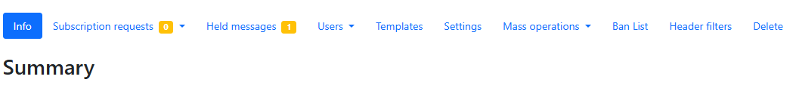
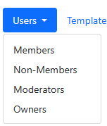

List ownership (requires Owner role)
Warning
As list owner you have powerful options to change the way that the list behaves. Use that power with CAUTION! You have the power to wipe the whole list and unsubscribe all users!
After signing in to the ICOS Mailing Lists home page, you can use the Owner button in the Role Selection area to display all of the mailing lists that you are an owner of. Then, you will be able to see many additional options on the list overview page:

Note
We will only be covering the most important, commonly used options here. Other options should only be used after consultation with the staff of the ICOS Carbon Portal
Managing users
Click on the Users option to open a drop-down menu displaying the various types of users that you can manage:

Add or remove members/moderators/owners
To add members, moderators or owners, select the corresponding option from the Users drop-down menu.
When you choose the Members option, you will see a table with all subscribers. To unsubscribe multiple members, you can select them by checking the checkboxes next to their email addresses, and then click the Remove Selected button.
When you choose the Moderators option, you can add a new moderator or remove existing moderators.
When you choose the Owners option, you will be able to add a new list owner or remove existing owners.
Change individual user settings
If you go to the Members section, you can change an individual user's settings for your mailing list by clicking on their email address, which opens the Subscription Options page.
Note
You can review Manage delivery preferences for a detailed explanation of each setting.
You can also change the moderation options for an individual user. At the bottom of the Subscription Options page, you can find the Moderation option. This allows you to set an action that should automatically be taken anytime a message from this user is received. You can always Hold for moderation, Reject (with notification), Discard (no notification), Accept immediately (bypass other rules), or use the Default processing choice.
Settings
Click on the Settings option to open the List Settings page. This opens up a secondary menu, in a column at the left side of the screen.
We will only be discussing the Message Acceptance section here. Click on Message Acceptance from the menu to open those settings.
There are two settings that can be useful for you to change:
- Default action to take when posting: There are two settings for this, which allow you to set the default action taken when a message is received from a user, depending on whether they are a member or a non-member. You can choose to Hold for moderation, Reject (with notification), Discard (no notification), Accept immediately (bypass other rules), or use the Default processing choice. For closed mail lists, you may prefer to automatically discard all non-member posts in order to minimize the risk of spam to the list.
- Maximum message size: You can define a maximum message size, in kilobytes (KB). Large files should not shared on the mail server, so do not set a limit higher than 5000 KB. Instead, large files should be uploaded to a cloud server and linked to. (For example, you could use the ICOS Fileshare to host files.)
Mass subscribe
You can select Mass operations and then Mass Subscribe to add many users to the mailing list at once.
Here, you can simply paste in a plain text list of email addresses to the Emails to mass subscribe text box, one per line. The possible formats are displayed below the box. You can, for example, paste one or two columns from Excel with the required data directly into the box.
After entering the email addresses, click the Subscribe users button. The mailing list server will try to add each user to the list, and will then notify you of whether each addition was successful. If there is an error, you can correct them and try to add them again.